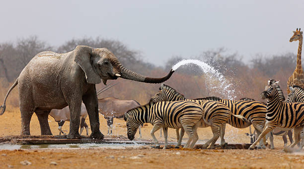

Biodiversity, the variety of life on Earth, is essential for the stability of ecosystems. Each species, from the smallest microorganism to the largest predator, plays a unique role in maintaining the health of the environment. The loss of even a single species can disrupt the delicate balance of nature, impacting everything from food chains to water purification processes.
Human activities such as deforestation, pollution, and urbanization are major threats to wildlife. As natural habitats shrink, many species are forced to adapt or face extinction. It’s crucial to recognize the impact of our actions and work towards more sustainable practices that protect the natural world, ensuring that future generations can enjoy its beauty and diversity.
